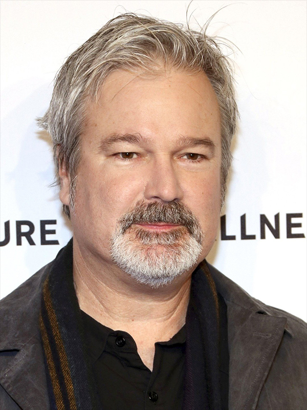
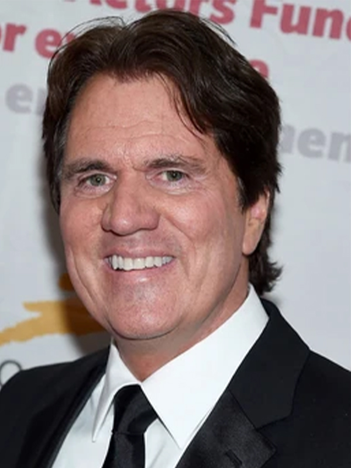
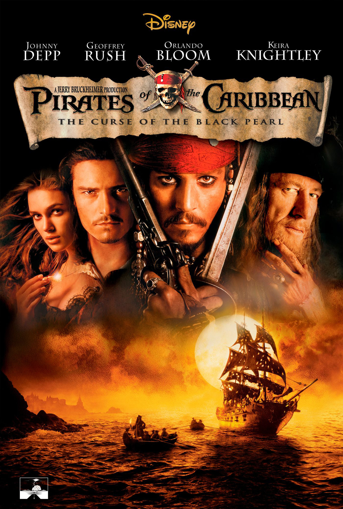
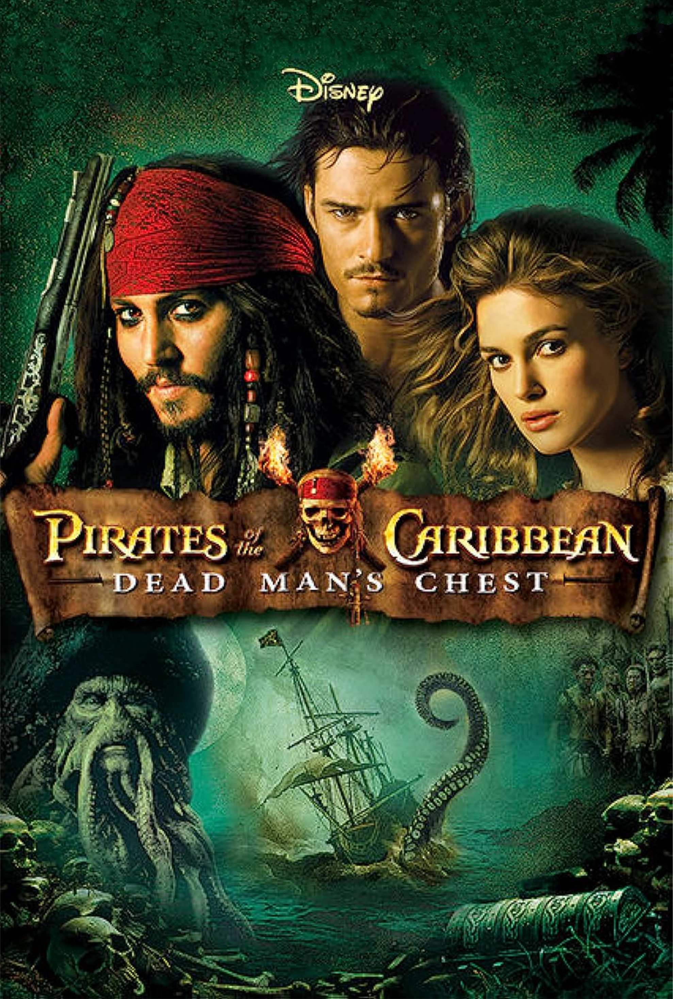
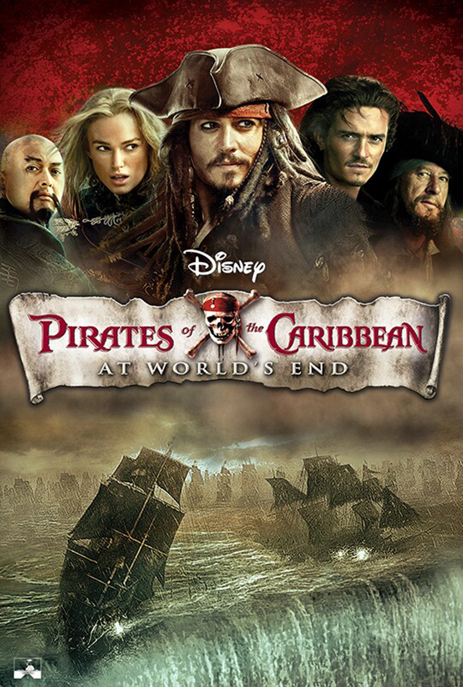

"Pirates of the Caribbean" is a beloved film series that combines swashbuckling adventure, supernatural elements, and memorable characters. The franchise, created by Walt Disney Pictures, consists of five films that follow the adventures of Captain Jack Sparrow and his companions in the treacherous waters of the Caribbean.
Directed by -
Gore Verbinski
 Gore Verbinski is an American film director, screenwriter, and producer known for his diverse and successful body of work. Born on March 16, 1964, Verbinski gained prominence with his innovative and visually stunning directing style. He is best known for directing the first three films in the "Pirates of the Caribbean" series, including "The Curse of the Black Pearl," which earned him critical acclaim and commercial success. Verbinski's films often blend genres and showcase his ability to create compelling narratives with striking visuals. With his unique storytelling approach, he remains a prominent figure in the world of filmmaking.
(1–3),
Rob Marshall
 Rob Marshall is an American film and theater director, choreographer, and producer, born on October 17, 1960. He is renowned for his contributions to both stage and screen. Marshall's work includes directing and choreographing acclaimed musicals like "Chicago" (2002) and "Into the Woods" (2014). He is known for his ability to seamlessly blend music and dance into compelling narratives. In the film industry, Marshall has directed successful movies such as "Pirates of the Caribbean: On Stranger Tides" (2011) and "Mary Poppins Returns" (2018). With his talent for storytelling through dance and music, he remains a prominent figure in the entertainment industry.
(4), Espen Sandberg and Joachim Rønning (5)
Based on - Pirates of the Caribbean by Walt Disney, On Stranger Tides by Tim Powers (4)
Produced by - Jerry Bruckheimer
Distributed by -
Walt Disney Studios Motion Pictures
Walt Disney Studios Motion Pictures, previously known as Buena Vista Pictures Distribution, Inc, is an American film distribution studio within the Disney Entertainment division of The Walt Disney Company.[2] It handles theatrical and occasional digital distribution, marketing and promotion for films produced and released by the Walt Disney Studios, including Walt Disney Pictures, Walt Disney Animation Studios, Pixar, Marvel Studios, Lucasfilm, and 20th Century Studios; the Searchlight Pictures label operates its own autonomous theatrical distribution and marketing unit.[3] The company was originally established by Walt Disney in 1953 as Buena Vista Film Distribution Company, Inc. (later renamed to Buena Vista Distribution Company, Inc. and Buena Vista Pictures Distribution, Inc.). It took on its current name in 2007
Pirates of the Caribbean 1 (2003): The Curse of the Black Pearl

"Pirates of the Caribbean (2003): The Curse of the Black Pearl" is an epic swashbuckling adventure film directed by
Gore Verbinski
Gore Verbinski is an American film director, screenwriter, and producer known for his diverse and successful body of work. Born on March 16, 1964, Verbinski gained prominence with his innovative and visually stunning directing style. He is best known for directing the first three films in the "Pirates of the Caribbean" series, including "The Curse of the Black Pearl," which earned him critical acclaim and commercial success. Verbinski's films often blend genres and showcase his ability to create compelling narratives with striking visuals. With his unique storytelling approach, he remains a prominent figure in the world of filmmaking.
and produced by Jerry Bruckheimer. It introduces us to the captivating world of pirates and the enigmatic Captain Jack Sparrow, played by Johnny Depp. The story follows the journey of Elizabeth Swann, portrayed by Keira Knightley, the governor's daughter, and Will Turner, played by Orlando Bloom, a blacksmith, as they get caught up in a thrilling quest involving a cursed pirate crew led by the villainous Captain Barbossa, portrayed by Geoffrey Rush.
The film is set in the Caribbean during the Golden Age of Piracy. It begins with the introduction of young Elizabeth, who possesses a mysterious gold medallion that is the key to breaking a terrible curse. When the medallion is taken from her, she enlists the help of Will, a skilled swordsman and secret admirer, to retrieve it.
Their journey leads them to Captain Jack Sparrow, a witty and eccentric pirate seeking to reclaim his stolen ship, the Black Pearl. Jack teams up with Will and Elizabeth, forming an unlikely alliance as they navigate treacherous waters, encounter supernatural forces, and engage in thrilling sword fights.
The Black Pearl and its cursed crew, doomed to remain undead under the moonlight, seek to break their curse by locating all the medallions. As Jack reveals his own connection to the cursed crew, he becomes embroiled in a high-stakes race against time.
Throughout the film, the audience is immersed in a world filled with swashbuckling action, unforgettable characters, and unexpected twists. The chemistry between Jack Sparrow, with his unique mannerisms and unconventional tactics, and the determined Will Turner creates a compelling dynamic, complemented by Elizabeth's strong-willed nature.
As the plot unfolds, alliances are tested, loyalties are questioned, and a thrilling battle ensues between the living and the undead. The film seamlessly weaves together elements of action, adventure, comedy, and romance, delivering an exhilarating cinematic experience.
"Pirates of the Caribbean: The Curse of the Black Pearl" was praised for its engaging storyline, stunning visual effects, and outstanding performances. Johnny Depp's portrayal of Captain Jack Sparrow, with his distinct voice and charismatic persona, garnered critical acclaim and earned him an Academy Award nomination for Best Actor. The film's success led to the creation of a beloved franchise, captivating audiences with its subsequent sequels.
Trailer
Pirates of the Caribbean 2 (2006): Dead Man's Chest

"Pirates of the Caribbean: Dead Man's Chest" (2006) is the thrilling sequel to the blockbuster hit "The Curse of the Black Pearl." Directed by
Gore Verbinski
Gore Verbinski is an American film director, screenwriter, and producer known for his diverse and successful body of work. Born on March 16, 1964, Verbinski gained prominence with his innovative and visually stunning directing style. He is best known for directing the first three films in the "Pirates of the Caribbean" series, including "The Curse of the Black Pearl," which earned him critical acclaim and commercial success. Verbinski's films often blend genres and showcase his ability to create compelling narratives with striking visuals. With his unique storytelling approach, he remains a prominent figure in the world of filmmaking.
and produced by Jerry Bruckheimer, the film continues the swashbuckling adventures of Captain Jack Sparrow, played by Johnny Depp, and his companions in the treacherous waters of the Caribbean.
The story picks up where the first film left off, with Captain Jack Sparrow in debt to the supernatural Davy Jones, captain of the infamous Flying Dutchman. As the deadline for Jack's payment approaches, he finds himself in a race against time to retrieve the heart of Davy Jones, a powerful artifact that can control the destiny of its possessor.
Alongside Jack Sparrow, we reunite with familiar characters, including blacksmith Will Turner, played by Orlando Bloom, and Elizabeth Swann, portrayed by Keira Knightley. Will and Elizabeth are engaged to be married but face numerous obstacles, including the interference of Lord Cutler Beckett, a ruthless East India Trading Company official played by Tom Hollander.
To locate the heart of Davy Jones, Jack Sparrow, Will Turner, and Elizabeth Swann embark on a dangerous journey that takes them to exotic locations, facing perilous challenges and encountering mythical sea creatures. Their adventure leads them to the island of Tortuga, where they seek out the legendary pirate Captain Sao Feng, portrayed by Chow Yun-fat, in hopes of obtaining a navigational chart to find Davy Jones' hidden lair.
The film introduces new characters, such as Tia Dalma, a mysterious voodoo priestess played by Naomie Harris, and Bootstrap Bill Turner, Will's father and a member of Davy Jones' cursed crew, portrayed by Stellan Skarsgård. The relationships between the characters become more complex as alliances shift, trust is tested, and loyalties are questioned.
As the crew encounters Davy Jones and his eerie crew of half-human, half-sea creature beings, they face thrilling battles and high-stakes confrontations. The film showcases stunning visual effects, including the intricately designed Davy Jones, whose tentacled face and mournful appearance are brought to life through remarkable CGI.
"Pirates of the Caribbean: Dead Man's Chest" is filled with memorable moments, from the explosive and chaotic battle on Isla Cruces to the heart-pounding chase through a dense jungle. The film also introduces a thrilling new antagonist, the relentless and relentless Davy Jones, whose presence adds an ominous and eerie atmosphere to the story.
As the film reaches its climax, alliances crumble, secrets are revealed, and the characters must confront their darkest fears and make impossible choices. The narrative sets the stage for the next installment of the franchise, leaving audiences eagerly anticipating the resolution of the enthralling storylines.
With its breathtaking action sequences, witty dialogue, and captivating performances, "Pirates of the Caribbean: Dead Man's Chest" successfully builds upon the success of its predecessor while deepening the mythology of the Pirates universe. The film's gripping storytelling, intricate plot twists, and dynamic characters continue to enthrall audiences, ensuring its place as a beloved chapter in the epic pirate saga.
Trailer
Pirates of the Caribbean 3 (2007): At World's End

"Pirates of the Caribbean: At World's End" (2007) is the thrilling third installment in the popular pirate adventure franchise. Directed by
Gore Verbinski
Gore Verbinski is an American film director, screenwriter, and producer known for his diverse and successful body of work. Born on March 16, 1964, Verbinski gained prominence with his innovative and visually stunning directing style. He is best known for directing the first three films in the "Pirates of the Caribbean" series, including "The Curse of the Black Pearl," which earned him critical acclaim and commercial success. Verbinski's films often blend genres and showcase his ability to create compelling narratives with striking visuals. With his unique storytelling approach, he remains a prominent figure in the world of filmmaking.
and produced by Jerry Bruckheimer, the film concludes the epic story arc that began with "The Curse of the Black Pearl" and continued in "Dead Man's Chest."
The film picks up with Captain Jack Sparrow, played by Johnny Depp, trapped in Davy Jones' Locker, a surreal and otherworldly prison. Meanwhile, the forces of the East India Trading Company, led by the sinister Lord Cutler Beckett, portrayed by Tom Hollander, are tightening their grip on the pirate-infested waters of the Caribbean.
Will Turner, portrayed by Orlando Bloom, and Elizabeth Swann, played by Keira Knightley, join forces with the resurrected Captain Barbossa, portrayed by Geoffrey Rush, and a colorful crew of pirates to rescue Jack Sparrow and unite the pirate lords in a final stand against the tyranny of Beckett and the East India Trading Company.
The story takes the audience on a wild and unpredictable journey through treacherous waters, haunted swamps, and exotic locales. The stakes are higher than ever as the battle for freedom and control of the seas intensifies. Old alliances are tested, new alliances are formed, and the true power of the pirate brethren is revealed.
The film introduces new characters, including the mysterious and powerful pirate captain, Sao Feng, portrayed by Chow Yun-fat. His enigmatic personality and shifting loyalties add an extra layer of intrigue to the story. The film also explores the complex relationship between Will Turner and his father, Bootstrap Bill, played by Stellan Skarsgård, as well as the evolving romance between Elizabeth Swann and Will.
"Pirates of the Caribbean: At World's End" showcases stunning visual effects, breathtaking action sequences, and a grand scale that befits its epic conclusion. The climactic battle scenes, including the awe-inspiring maelstrom battle, deliver heart-pounding excitement and spectacle.
The film delves deeper into the mythology of the pirate world, exploring themes of freedom, sacrifice, and the nature of power. It also brings closure to the personal journeys of the main characters, testing their resolve, and challenging their beliefs.
With its mix of swashbuckling adventure, humor, and emotional depth, "Pirates of the Caribbean: At World's End" provides a satisfying conclusion to the trilogy. It delivers the excitement and spectacle fans have come to expect from the franchise while adding new layers of complexity and depth to its beloved characters. The film solidifies its place as a thrilling and memorable chapter in the Pirates saga.
Trailer
Pirates of the Caribbean 4 (2011): On Stranger Tides
"Pirates of the Caribbean: On Stranger Tides" (2011) is the fourth installment in the popular swashbuckling adventure franchise. Directed by
Rob Marshall
Rob Marshall is an American film and theater director, choreographer, and producer, born on October 17, 1960. He is renowned for his contributions to both stage and screen. Marshall's work includes directing and choreographing acclaimed musicals like "Chicago" (2002) and "Into the Woods" (2014). He is known for his ability to seamlessly blend music and dance into compelling narratives. In the film industry, Marshall has directed successful movies such as "Pirates of the Caribbean: On Stranger Tides" (2011) and "Mary Poppins Returns" (2018). With his talent for storytelling through dance and music, he remains a prominent figure in the entertainment industry.
and produced by Jerry Bruckheimer, the film marks a new chapter in the legendary saga of pirates and the enigmatic Captain Jack Sparrow, portrayed by Johnny Depp.
The story follows Captain Jack Sparrow as he embarks on a thrilling quest to find the legendary Fountain of Youth. However, he soon discovers that he is not the only one seeking the mythical waters. The infamous pirate Blackbeard, portrayed by Ian McShane, and the beautiful and enigmatic Angelica, played by Penélope Cruz, are also in pursuit of eternal youth.
To reach the Fountain of Youth, Jack Sparrow and his crew must navigate treacherous waters and face formidable challenges, including mermaids with a deadly allure. Along the way, Jack's past comes back to haunt him as he encounters old enemies and confronts unresolved feelings for Angelica, adding an emotional dimension to the action-packed adventure.
Throughout the film, Jack Sparrow's trademark wit and charm shine, and Depp's portrayal brings his iconic character to life once again. The addition of new characters, including the charming missionary Philip Swift, portrayed by Sam Claflin, and the ruthless pirate Captain Barbossa, portrayed by Geoffrey Rush, adds depth and intrigue to the narrative.
As the story unfolds, alliances shift, loyalties are tested, and secrets are revealed. The search for the Fountain of Youth becomes a race against time, with each character motivated by their own desires and ambitions.
"Pirates of the Caribbean: On Stranger Tides" is a visual spectacle, with stunning cinematography capturing the beauty of exotic locations and high-seas adventures. The film's action sequences, including the breathtaking battle at the Fountain of Youth, deliver excitement and spectacle that keep audiences on the edge of their seats.
While the film retains the swashbuckling charm of the previous installments, it also stands as a new and self-contained adventure that introduces fresh elements to the beloved franchise. With its mix of humor, romance, and supernatural elements, "On Stranger Tides" provides a thrilling and entertaining addition to the Pirates saga.
The film received positive reviews from audiences and critics alike, praising its engaging storytelling, captivating performances, and impressive visuals. Depp's portrayal of Captain Jack Sparrow once again earned acclaim, cementing his status as the heart and soul of the Pirates franchise.
Trailer
Pirates of the Caribbean 5 (2017): Dead Men Tell No Tales
"Pirates of the Caribbean: Dead Men Tell No Tales" (2017) is the fifth installment in the thrilling pirate adventure franchise. Directed by Joachim Rønning and Espen Sandberg and produced by Jerry Bruckheimer, the film brings back the beloved character of Captain Jack Sparrow, portrayed by Johnny Depp, for another epic high-seas adventure.
The story follows Captain Jack Sparrow as he faces a new formidable enemy, the vengeful and undead Captain Salazar, portrayed by Javier Bardem. Salazar and his crew of ghostly pirates have escaped from the Devil's Triangle with the goal of eliminating all pirates, with Jack Sparrow being their primary target.
To escape Salazar's wrath and find a way to defeat him, Jack Sparrow must team up with new allies, including the young and determined astronomer Carina Smyth, played by Kaya Scodelario, and the brave and resourceful Henry Turner, portrayed by Brenton Thwaites. Henry is on a personal quest to break a curse that binds his father, Will Turner, portrayed by Orlando Bloom, to the cursed ship, the Flying Dutchman.
As Jack Sparrow and his new companions navigate through perilous waters and face deadly challenges, they are pursued by Captain Barbossa, played by Geoffrey Rush, who has his own agenda and a complicated history with Salazar.
The film is filled with thrilling action sequences, including daring escapes, intense sea battles, and breathtaking visual effects. The stunning CGI brings Captain Salazar and his ghostly crew to life, creating a formidable and terrifying presence on screen.
While the film maintains the swashbuckling charm and humor that fans love about the Pirates franchise, it also introduces fresh elements, including new characters and mysteries from the past. The movie delves into the lore of the previous films, providing closure to some storylines while setting the stage for potential future adventures.
"Pirates of the Caribbean: Dead Men Tell No Tales" captures the essence of the Pirates saga, combining heart-pounding action, romance, and supernatural elements. Johnny Depp's charismatic portrayal of Captain Jack Sparrow remains a highlight, with his wit and humor making him the anchor of the film.
Overall, the fifth installment of the Pirates franchise continues the legacy of swashbuckling adventure and intrigue that has captivated audiences for years. With its thrilling plot, dynamic characters, and stunning visuals, "Dead Men Tell No Tales" offers an entertaining and satisfying addition to the iconic pirate saga. It's a must-watch for both longtime fans and newcomers to the Pirates of the Caribbean universe.
Trailer
Summary
In summary The "Pirates of the Caribbean" movie series is a thrilling and swashbuckling adventure that has captured the hearts of audiences worldwide. With its charismatic and eccentric protagonist, Captain Jack Sparrow, and a cast of memorable characters, the series has become a beloved part of modern cinema. Each film offers a perfect blend of action, humor, and fantasy, set against the backdrop of the high seas during the Golden Age of Piracy. With its captivating storytelling, stunning visual effects, and timeless themes, the "Pirates of the Caribbean" movie series continues to entertain and enchant audiences of all ages, leaving a lasting legacy in the world of film.
There was a teaser trailer for Pirates of the Caribbean 6 at the end of the last released movie of the franchise "Pirates of the Caribbean 5 (2017): Dead Men Tell No Tales". But there is official release date or news about it as of July 2023
 Walt Disney Studios Motion Pictures, previously known as Buena Vista Pictures Distribution, Inc, is an American film distribution studio within the Disney Entertainment division of The Walt Disney Company.[2] It handles theatrical and occasional digital distribution, marketing and promotion for films produced and released by the Walt Disney Studios, including Walt Disney Pictures, Walt Disney Animation Studios, Pixar, Marvel Studios, Lucasfilm, and 20th Century Studios; the Searchlight Pictures label operates its own autonomous theatrical distribution and marketing unit.[3] The company was originally established by Walt Disney in 1953 as Buena Vista Film Distribution Company, Inc. (later renamed to Buena Vista Distribution Company, Inc. and Buena Vista Pictures Distribution, Inc.). It took on its current name in 2007
Walt Disney Studios Motion Pictures, previously known as Buena Vista Pictures Distribution, Inc, is an American film distribution studio within the Disney Entertainment division of The Walt Disney Company.[2] It handles theatrical and occasional digital distribution, marketing and promotion for films produced and released by the Walt Disney Studios, including Walt Disney Pictures, Walt Disney Animation Studios, Pixar, Marvel Studios, Lucasfilm, and 20th Century Studios; the Searchlight Pictures label operates its own autonomous theatrical distribution and marketing unit.[3] The company was originally established by Walt Disney in 1953 as Buena Vista Film Distribution Company, Inc. (later renamed to Buena Vista Distribution Company, Inc. and Buena Vista Pictures Distribution, Inc.). It took on its current name in 2007